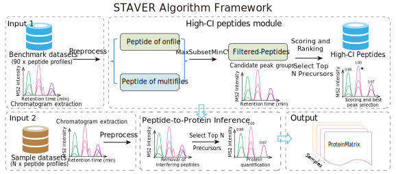

Tutorials¶
STAVER consists of four main modules: (I) the input/output module, (II) the data preprocessing module, (III) the high-confidence peptide identification (High-CI-Peptides) module, and (IV) the protein quantification (Peptide-to-Protein inference) module. STAVER, featuring a modular design, provides flexible compatibility with existing DIA MS data analysis pipelines. The operational sequence of STAVER and the functions of each module are delineated as follows. An STAVER workflow can be divided into the following four stages. Here, we provide a brief overview of each stage and link to the corresponding tutorial.
The STAVER workflow is implemented in the staver_pipeline module. This module provides a comprehensive proteomics data analysis tool designed to streamline the workflow from raw data preprocessing to the final result output. We provide a tutorial for running the STAVER workflow on DIA-MS dataset with the Command-Line Interface (CLI), Calling the Function with a List parameters, and Calling the Function with a Dict parameters The tutorial is designed to be a step-by-step guide for users to run the STAVER workflow on their own DIA-MS datasets. The tutorial is divided into the following sections:

Stage 1: Data Input/Output (I/O)¶
In the realm of proteomics software development, ensuring seamless data management is paramount. At the forefront of this process lies the Input/Output (I/O) module. This module serves as the gateway for data flow within the system. Its primary responsibilities include: (1) ingesting data, (2) archiving intermediate outcomes, and (3) storing finalized processed results.
Data Ingestion¶
The Input/Output (I/O) module efficiently processes various proteomic data types, supporting multiple formats and sources. It ensures data integrity and reduces data loss risks. The module uses the joblib_load_file function to load datasets in parallel, utilizing all available CPU cores, excluding two, (CPU cores - 2). The default CPU allocation can be adjusted using the -thread_numbers CPU_numbers parameter for greater control and enhanced flexibility.
It should be highlighted that the input module supports a variety of proteomic file formats as dataset input, including the following file extensions: csv,.tsv,.txt,.xls,.xlsx,.xlsm,.mzTab,.mzIdentML(.mzid),.pepXML, and.protXML. Datasets with other attachments must be converted to a supported format before loading.
import os
import pandas as pd
from pyteomics import mzid, pepxml, protxml, mztab
from staver.data import joblib_load_file
def read_proteomics_file(file_path):
"""
Reads various proteomics output file formats and returns the content.
This function reads data from different proteomics file formats and returns
it as a pandas DataFrame. It supports common file formats like CSV, TSV, Excel,
and specialized formats like mzid, pepxml, protxml, and mztab.
Parameters:
file_path (str): Path to the proteomics file.
Returns:
pd.DataFrame: DataFrame containing the data from the file.
Raises:
ValueError: If the file does not exist or if the file extension is unsupported.
"""
if not os.path.exists(file_path):
raise ValueError(f"File {file_path} does not exist!")
ext = os.path.splitext(file_path)[1].lower()
# Reading common file formats
if ext in ['.txt', '.tsv', '.csv']:
delimiter = '\t' if ext == '.tsv' else ','
return pd.read_csv(file_path, delimiter=delimiter)
elif ext in ['.xls', '.xlsx', '.xlsm']:
return pd.read_excel(file_path)
# Reading specialized proteomics file formats
try:
if ext == '.mzid':
return pd.DataFrame(mzid.read(file_path))
elif ext == '.pepxml':
return pd.DataFrame(pepxml.read(file_path))
elif ext == '.protxml':
return pd.DataFrame(protxml.read(file_path))
elif ext == '.mztab':
with mztab.MzTab(file_path) as reader:
psm_data = reader.spectrum_match_table
return pd.DataFrame(psm_data)
except Exception as e:
raise ValueError(f"Error reading {ext} file at {file_path}: {str(e)}")
raise ValueError(f"Unsupported file extension: {ext}")
Example usage
Read single proteomic file
from staver.data import read_proteomics_file
result = read_proteomics_file('path_to_file.txt')
print(result)
Read multiple proteomic files For large-scale DIA research cohorts (hundreds or thousands of DIA datasets), the
joblib_load_filefunction to efficiently load proteomic datasets in parallel, with default to all available CPU cores(CPU cores - 2). Users can enhance flexibility by adjusting the default allocation using the-thread_numbers CPU_numbersparameter.
from staver.data import joblib_load_file
result = joblib_load_file(inpath="/path/to/files", extension=".txt")
print(result.head())
Intermediate Data Management¶
During proteomic dataset processing, the software generates intermediate results. These vary from temporary data sets for specific computational tasks to more significant milestone results within the processing pipeline. The I/O module archives these results for potential future review or analysis.
Finalized Result Archiving and Storage¶
Upon completing data processing, the software archives the final results. The I/O module not only secures these results but also organizes them for easy access and further analysis. While the default output path is the current program’s running directory, users have the option to specify a custom output path.
Example usage
from staver import staver_pipeline
# construct the parameter list
args = [
"--thread_numbers", "8",
"--input", "path_to_input",
"--output_peptide", "path_to_output_peptide",
"--output_protein", "path_to_output_protein",
# Other required parameters
]
# construct parameters in dictionary format
args = {
"thread_numbers": 8,
"input": "path_to_input",
"output_peptide": "path_to_output_peptide",
"output_protein": "path_to_output_protein",
# Other required parameters
}
# running function
staver_pipeline(args)
Stage 2: Data preprocessing¶
The data preprocessing module plays a pivotal role in harmonizing disparate data formats, originating from diverse DIA (Data-Independent Acquisition) search algorithms, into a unified and standardized representation. This consolidation ensures that data from varying sources is not only compatible but also primed for subsequent analyses with enhanced accuracy.
Harmonizing Output Schemas:¶
Different DIA search algorithms can produce outputs with diverse schemas, possibly using various naming conventions and data structures. Such disparities can impede consistent data analysis. The data preprocessing module addresses this by:
Standardizing Naming Conventions: Given the myriad of tools and platforms in proteomics, different terminologies might refer to the same entity across datasets. By employing a uniform naming convention for proteins, peptides, and other entities, this module ensures seamless integration of data from multiple sources.
Achieving a Cohesive Data-frame Format: Post the harmonization of naming conventions, all data gets consolidated into a singular, cohesive data-frame format. This structured representation not only simplifies data handling but also ensures uniformity in subsequent analytical procedures.
Example usage
from staver.preprocessing import harmonize_columns
# running function
# Assuming you have dataframes df_DIANN, df_spectronaut and df_openswath from the respective software.
df_openswath_harmonized = harmonize_columns(df_DIANN, 'DIA-NN')
df_spectronaut_harmonized = harmonize_columns(df_spectronaut, 'Spectronaut')
df_openswath_harmonized = harmonize_columns(df_openswath, 'OpenSWATH')
False Discovery Rate (FDR) Assessment:¶
Data accuracy and integrity are paramount in proteomics. The module takes significant strides in ensuring data quality by:
Two-dimensional FDR Assessment: A nuanced, two-dimensional approach is adopted to scrutinize false discoveries at both peptide and protein levels. This comprehensive assessment minimizes errors by accounting for discrepancies at various granularities, enhancing the precision of findings.
Improving Precision: By systematically curtailing false discoveries, the module accentuates the reliability and credibility of the processed data.
Constructing Extensive Index:¶
To expedite subsequent data operations, an extensive index is constructed, pivoting on unique peptide and protein identifiers. This indexed approach:
Enhances Data Retrieval: By utilizing identifiers as primary keys, data retrieval operations become significantly more efficient, ensuring prompt responses even with voluminous datasets.
Facilitates Data Operations: With a systematic index in place, various data operations, including searches, updates, and manipulations, become streamlined, reducing computational overheads.
Example usage
from staver.preprocessing import construct_index
# running function
# Assuming you have dataframes df_DIANN, df_spectronaut and df_openswath from the respective software.
df_openswath_indexed = construct_index(df_openswath_harmonized, 'DIA-NN')
df_spectronaut_indexed = construct_index(df_spectronaut_harmonized, 'Spectronaut')
df_openswath_indexed = construct_index(df_openswath_harmonized, 'OpenSWATH')
Infrastructure Recommendations:¶
Proteomics datasets, especially after comprehensive preprocessing, can be colossal. To handle the complexity and volume, we need to optimize the memory occupied by the data in a timely manner. The data preprocessing module addresses this by:
Optimizing Memory Usage: The module optimizes memory usage by reducing the memory occupied by the data. This ensures that even the most extensive datasets are processed without bottlenecks, guaranteeing smooth and uninterrupted operations.
Robust Computational Infrastructure: A sturdy infrastructure, preferably with at least 32 GB of operational memory, is advised. Such an infrastructure ensures that even the most extensive datasets are processed without bottlenecks, guaranteeing smooth and uninterrupted operations.
Scalability Considerations: Given the ever-evolving nature of proteomics data, it’s prudent to opt for a system that allows for easy scalability. This ensures that as datasets grow, the infrastructure can be augmented without significant overhauls.
Example usage
from staver.preprocessing import reduce_mem_usage
def memory_usage_info(verbose, start_mem, end_mem):
"""Print the memory usage information."""
if verbose:
print(
f"Memory usage decreased from {start_mem:.2f} MB to {end_mem:.2f} MB "
f"({100 * (start_mem - end_mem) / start_mem:.1f}% reduction)"
)
original_memory = df.memory_usage().sum() / 1024**2
df_reduced = reduce_mem_usage(df)
reduced_memory = df_reduced.memory_usage().sum() / 1024**2
memory_usage_info(verbose=True, start_mem=original_memory, end_mem=reduced_memory)
Stage 3: High-confidence Peptide Identification¶
To ensure the authenticity and reliability of identified peptides, this module is meticulously designed to sift through peptide matrices, setting apart genuine peptides from potential artifacts. These artifacts often arise from non-biological interferenc and noise, which can significantly obfuscate downstream proteomic analyses.
During peptide identification, the high-confidence peptide module conducts a comprehensive analysis on a set of ‘n’ peptide matrices from a standardized benchmark dataset, each derived from technical replicate samples for continuous injection searched against the hybrid spectral library. Integrating prior knowledge from the benchmark dataset significantly enhances the analytical capability. The module carefully differentiates high-confidence peptides from potential artifacts, primarily introduced by nonbiological noise. The core of the high-confidence peptide module is the peptide scores calculation step. Comprehensive peptide confidence assessment employs a strategy that synergistically combines peptide frequency, fragment intensities, peptide retention times (RT), and variation metrics across samples. First, the prior data from the benchmark dataset are loaded. Peptides with the same sequence but different PTMs and/or charges are treated as different peptides. This list is then passed through the scoring and ranking system to yield the peptide confidence scores and ranks. Each peptide is assigned a normalized metric score ranging from 0 to 1, with scores closer to 1 signify an elevated degree of confidence in the peptide’s authenticity. The module employs a multi-pronged approach to identify high-confidence peptides, including:
Prior Knowledge Integration: The module leverages prior knowledge from a standardized benchmark dataset to enhance analytical capabilities. This integration ensures that the module is primed to identify peptides with a high degree of accuracy.
Comprehensive Peptide Confidence Assessment: The module employs a multi-faceted approach to assess peptide confidence. This includes evaluating peptide frequency, fragment intensities, retention times, and variation metrics across samples. This comprehensive assessment ensures that only high-confidence peptides are identified, minimizing the risk of false discoveries.
Synergistic Scoring and Ranking: The module employs a synergistic scoring and ranking system to identify high-confidence peptides. This ensures that the most reliable peptides are identified, enhancing the credibility of subsequent analyses.
Enhanced Analytical Capabilities: By employing a multi-pronged approach to identify high-confidence peptides, the module significantly enhances the analytical capabilities of the software, ensuring that only the most reliable peptides are identified.
Usage¶
The HighCIPeptides class can be used by creating an instance of the class and calling the main() method. The main() method performs the entire high confidence peptide identification workflow and returns the path to the reference file with the top precursor ions.
To customize the behavior of the HighCIPeptides class, you can modify the default attribute values or pass different values as parameters when creating an instance of the class.
To use the HighCIPeptides module, simply import the HighCIPeptides class and call the main() method:
Example usage:
from staver.HighCIPeptides import HighCIPeptides
# Initialize the defined class
staver = HighCIPeptides()
staver.main()
Stage 4: Protein quantitative inference¶
In the realm of proteomics, accurate protein quantification and peptide-to-protein inference stand as cardinal processes, paving the way for the in-depth exploration of cellular systems and biological processes. The PeptideToProteinInference module is designed to infer proteins from high-confidence peptides. Which employs the MaxLFQ algorithm, renowned for its precision and robustness (Cox et al., 2014; Mol Cell Proteomics; PMID: 24942700), to estimate relative protein abundances from ion quantification in DIA-MS-based proteomics. Notably, we present an open-source implementation of the widely-used maximal peptide ratio extraction algorithm of the MaxLFQ algorithm in Python, previously only compatible with data-dependent acquisition mode in the closed-source MaxQuant software package.
The custom-defined MaxLFQ function for protein quantification in the DIA data processing pipeline was integrated into the PeptideToProteinInference module. The following elucidates the process of implementing the Protein Quantification (Peptide-to-Protein Inference) Module.
Implementation of the MaxLFQ Algorithm in Python¶
This following code defines the maxLFQ function that calculates the maximum likelihood fold change estimates for each column of the input DataFrame X. The function returns a dictionary with the keys 'estimate' and 'annotation'.
class MaxLFQOptimizer:
"""
A class for optimizing the maxLFQ algorithm using Numba for faster computation.
This class contains methods for performing the maxLFQ quantification algorithm on mass spectrometry data.
It is optimized with Numba to improve performance.
Methods:
_spread(i, g, cc, X): Assigns group labels to elements in a matrix.
_maxLFQ_do(X_sub): Performs the maxLFQ algorithm on a subset of the data.
maxLFQ_fast(X): Applies the maxLFQ algorithm to the given data matrix.
Usage:
>>> optimizer = MaxLFQOptimizer()
>>> data = np.array([[np.nan, 1, 2], [np.nan, np.nan, 2], [3, 4, np.nan]])
>>> result = optimizer.maxLFQ_fast(data)
>>> print(result)
Note:
This is an optimized version of the algorithm, designed for large-scale computations.
"""
def __init__(self):
""" Initializes the MaxLFQOptimizer class. """
pass
@staticmethod
@numba.jit
def _spread(i, g, cc, X):
"""
Recursively assigns group labels to elements in a matrix.
Args:
i (int): The current column index in the matrix.
g (np.ndarray): An array to store group labels.
cc (int): The current group label.
X (np.ndarray): The input data matrix.
This method is part of the maxLFQ algorithm and is optimized with Numba.
It assigns group labels to elements in X, based on their non-NaN status and connectivity.
"""
g[i] = cc
for r in range(X.shape[0]):
if not np.isnan(X[r, i]):
for k in range(X.shape[1]):
if not np.isnan(X[r, k]) and np.isnan(g[k]):
MaxLFQOptimizer._spread(k, g, cc, X)
@staticmethod
@numba.jit
def _maxLFQ_do(X_sub):
"""
Performs the maxLFQ algorithm on a subset of the data.
Args:
X_sub (np.ndarray): A subset of the original data matrix.
Returns:
np.ndarray: The results of the maxLFQ algorithm on X_sub.
This method implements the maxLFQ algorithm, optimized with Numba. It calculates the relative
quantities of peptides/proteins from the input LC-MS/MS data.
"""
N = X_sub.shape[1]
AtA = np.zeros((N, N))
Atb = np.zeros(N)
for i in range(N - 1):
for j in range(i + 1, N):
r_i_j = np.nanmedian(X_sub[:, j] - X_sub[:, i])
if not np.isnan(r_i_j):
AtA[i, j] = AtA[j, i] = -1
AtA[i, i] += 1
AtA[j, j] += 1
Atb[i] -= r_i_j
Atb[j] += r_i_j
A = np.vstack([np.hstack([2 * AtA, np.ones((N, 1))]),
np.hstack([np.ones(N), 0])])
b = np.append(2 * Atb, np.nanmean(X_sub) * N)
res = lstsq(A, b, lapack_driver='gelsy')[0]
return res[:N]
def maxLFQ_fast(self, X):
"""
Applies the maxLFQ algorithm to the given data matrix.
Args:
X (np.ndarray): A data matrix where rows represent samples and columns represent features.
Returns:
dict: A dictionary with two keys: 'estimate' containing the quantification result, and
'annotation' containing information about the calculation or errors.
This method checks for empty or NaN-only data, handles single-row data, assigns group labels,
and applies the maxLFQ algorithm to each group of features.
"""
if X.size == 0:
return {"estimate": np.nan, "annotation": "Empty array"}
if np.isnan(X).all():
return {"estimate": np.nan, "annotation": "All NaN values"}
# Handle single row case
if X.shape[0] == 1:
return {"estimate": X[0], "annotation": [""]}
N = X.shape[1]
# 使用 numba 加速的函数调用
cc = 0
g = np.full(N, np.nan)
for i in range(N):
if np.isnan(g[i]):
cc += 1
self._spread(i, g, cc, X)
w = np.full(N, np.nan)
for i in range(1, cc + 1):
ind = np.where(g == i)[0]
if len(ind) == 1:
w[ind[0]] = np.nanmedian(X[:, ind[0]])
else:
X_sub = X[:, ind]
results = self._maxLFQ_do(X_sub)
w[ind] = results
# Check for all NaN results
if np.isnan(w).all():
return {"estimate": w, "annotation": "NA"}
# Preparing final results
annotation = ";".join(map(str, g)) if np.any(np.isnan(w)) else ""
return {"estimate": w, "annotation": annotation}
The function first checks if all values in the DataFrame are NaN. If so, it returns a dictionary with NaN as the 'estimate' value and the string “NA” as the 'annotation' value.
If the DataFrame contains non-NaN values, the function proceeds to calculate the maximum likelihood fold change estimates. It does this by iterating over the columns of the DataFrame and assigning group labels to non-NaN values using a recursive _spread function. The function then calculates the estimates using the _maxLFQ_do function, which performs matrix operations and solves a linear least squares problem.
The resulting estimates are stored in an array w. If all values in w are NaN, the function returns a dictionary with w as the 'estimate' value and the string “NA” as the 'annotation' value.
If w contains non-NaN values, the function checks if all samples within each group have the same label. If they do, it returns a dictionary with w as the 'estimate' value and an empty string as the 'annotation' value.
If the samples within each group have different labels, the function updates the labels to NaN for the samples with NaN estimates, and returns a dictionary with w as the 'estimate' value and a string representation of the updated labels joined by ‘;’ as the 'annotation' value.
Usage¶
To enhance the maxLFQ algorithm’s performance in processing large-scale proteomics data, we have optimized its computational efficiency. Additionally, we evaluated and compared its performance across datasets of varying sample sizes. For more details, please refer to the documentation.
Example usage:
from staver.PeptideToProteinInference import MaxLFQOptimizer
from staver.utils import generate_test_peptide_data
# Create a sample DataFrame
peptide_intensities = generate_test_peptide_data(10, 200, 0.2)
# Execute the maxLFQ function
optimizer = MaxLFQOptimizer() # Create an instance of MaxLFQOptimizer
# Apply the maxLFQ method
result = optimizer.maxLFQ_fast(peptide_intensities.to_numpy())
# Print the result
print(result)
5、STAVER pipeline module¶
The STAVER algorithm, is implemented and encapsulated in the staver_pipeline module, offers a comprehensive tool for proteomics data analysis. It streamlines the entire process from raw data preprocessing to final result generation. As a command-line based module, it enables efficient processing of large-scale DIA MS data using the standardized STAVER algorithm, primarily aimed at variation reduction. The module’s key features include:
High Flexibility: It supports multiple input file formats and allows users to adjust various parameters to suit their specific analysis requirements.
Scalability: The module can process hundreds or thousands of DIA datasets simultaneously.
Extensibility: Users can easily enhance the module with new features and functionalities.
Compatibility: STAVER’s modular design ensures it integrates well with existing DIA-MS data analysis pipelines.
Using the STAVER_pipeline¶
To utilize the staver_pipeline, the command line interface requires specific parameters. These include thread numbers, input data paths, and output paths for peptide and protein data. Optional parameters such as the reference dataset path and count cutoffs can also be specified. The module contains a ValidateParser class to verify that the provided paths and values are correct and within the expected ranges. The staver_pipeline module also contains a staver_arguments.txt file that logs all the parameters used during the run. This file can be used for future reference and reproducibility.
Usage Documentation:¶
Preparing the Environment:
Ensure that Python is installed on your system.
Download or clone the STAVER_pipeline repository to your local machine or HPC.
Setting Up the Parameters:
Open the command-line interface.
Use the
-nflag to set the number of threads for computation.The
-iflag should point to your input DIA data path.If you have a reference dataset, use the
-refflag to provide its path; otherwise, the default dataset will be used.Define the output paths for peptide data with
-oand protein data with-op.
Running the Pipeline:
Call the
staver_pipeline()function by executing the script.Upon running, the script validates inputs, prints out all the parameters for review, and processes the input data through the STAVER algorithm.
Users can monitor the progress directly in the command-line interface.
Reviewing the Output:
After processing, the output will be stored at the designated output paths.
Check the
staver_arguments.txtfor a log of the used arguments.
Interpreting the Results:
The STAVER_pipeline module will produce cleaned, aligned, quantified, and statistically analyzed results.
Users can utilize the output for further biological analysis and interpretation.
Customizing the Process:
Users can set various optional parameters like coefficient of variation thresholds for peptides and proteins, NA thresholds, and top precursor ions.
These options allow for customization of the data processing to align with the experimental needs.
For more detailed usage, one can always run the script with the -h or --help flag to get the help message explaining all available command arguments. The built-in versioning allows users to ensure they are using the correct version of the software, which is particularly useful for reproducibility and standardization across different studies.
Example usage:
1. Command-Line Interface (CLI): Use the CLI to run the
staver_pipelinemodule.
cd STAVER
python staver_pipeline.py \
--thread_numbers < The CPU worker numbers, Default to nmax-2 > \
--input < The DIA data input directory> \
--output_peptide < The processed DIA peptide data output directory > \
--output_protein < The processed DIA protein data output directory > \
--fdr_threshold < Default to 0.01 > \
--count_cutoff_same_libs < Default to 1 > \
--count_cutoff_diff_libs < Default to 2 > \
--proteins_cv_thresh < Default to 0.3 > \
--na_threshold < Default to 0.3 > \
--top_precursor_ions < Default to 6 > \
--file_suffix < Default to "_F1_R1" > \
2. Calling the Function with a List: Directly invoke the
staver_pipelinefunction from the staver module and pass alistof parameters to thestaver_pipelinefunction.
from staver import staver_pipeline
# construct the parameter list
args = [
"--thread_numbers", "8",
"--input", "path_to_input",
"--output_peptide", "path_to_output_peptide",
"--output_protein", "path_to_output_protein",
# Other required parameters
]
# running function
staver_pipeline(args)
3. Calling the Function with a Dictionary: Directly invoke the
staver_pipelinefunction from thestavermodule and pass adictof parameters to thestaver_pipelinefunction.
from staver import staver_pipeline
# construct parameters in dictionary format
args = {
"thread_numbers": 8,
"input": "path_to_input",
"output_peptide": "path_to_output_peptide",
"output_protein": "path_to_output_protein",
# Other required parameters
}
# running function
staver_pipeline(args)